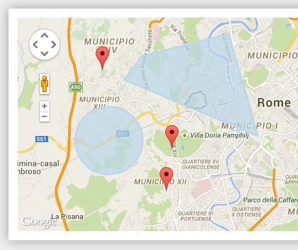
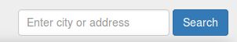
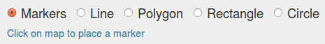

Guidelines about how to install and use the Google Maps Draw Module
Google Maps Draw Module is a useful tool for web developers who want to build web apps for creating maps and draw shapes in the front end. It is based on modern tools such as Google API v3, jQuery, Javascript, Bootstrap, HTML5 and CSS3.
This module provides a responsive web interface to users for adding markers and drawing polygons, rectangles, polylines and circles in order to create maps online. Users are able to add/edit/delete objects on Google Maps. Also users can enter title and description for all objects they create.
Basic information of all objects added (title, coords) are located in HTML input elements, so developers can use them in any way by submitting the form.
The module has a geocoding tool for searching an area and center map on this location.
For a full demonstration of Google Maps Draw Module, PHP and Mysql was used for storing maps created in database, for loading objects to display on map, editing and deletings maps.
Current Google Maps Draw Module demonstration can work on any web server which support PHP (at least v5.4) and MySQL (at least .5.3).
In order to start using this module, you have to follow steps below for installation:
Google Maps Draw Module provides a responsive web interface to users for adding markers and drawing polygons, rectangles, polylines and circles in order to create maps online.
The module has a geocoding tool for searching an area by name or coordinates and center map on this location.

When click on Create Map, an interactive map is displayed so users can select various shapes for adding to this map. The available shapes are:

If select markers, then user has just click on the map to locate each marker having also the option to move it on the desired location. By clicking on "Change icon" button, the user can change the icon of marker to add.
If select polylines or polygons or rectangles or circles, when click on "Add" button a corresponding editable shape is added on the map. So the user is able to modify the shape and also move it to the desired location. By clicking on "Save" button, the shape becomes not editable and the user can add another shape.
For each shape added on the map, the user can also enter a title/description. Finally the user can enter title and description for the map created.
For each shape added, there are buttons for editing and removing before saving. Also when click an "Clear All" button, all objects from the map will be removed.
When finish editing the map, user must click on "Submit" button, so the map and all connected shapes will be stored on database.
For retrieving any map stored, click on "Browse Maps" and then click on a map title from the list displayed.
The zip file contains the following files and directories:
For any customization required on creating maps and drawing objects on map, the following files have to be modified:
For any customizations on HTML views, modifications could be made in files at "view" folder.
For translating more languages, is required to add the appropriate file in folder "languages" (e.g. copy from en.php). Also the new language must be added in file "includes/config.php.".
1.4 (17 Aug 2015)
------------------------------------------
- Added the option of displaying a global map which contains all objects created by all users
- Added full page map view, so it's possible to use a map on other pages or sites using iframe
- Added option for admin to select which types of map objects will be available for users (e.g. enable only markers and polygons)
- Added option for admin to enable/disable the list of check boxes with available objects on each map
- Added multilanguage support
- Several code improvements
1.3 (13 May 2015)
------------------------------------------
- Added OpenStreetMap layer
- Added calculation of area for polygons, rectangles and circles
- Added option to change icon on markers
- Added checkboxes for each group of objects to show/hide on map
- Added option to add marker on current user's location
- Map options (center, zoom, type) are stored now in database
- New objects are automatically resized depending on the zoom level
- Added config file for setting basic options of the application
- Fixed issue when viewing a map, so the markers are not draggable
- Several code improvements
1.2 (20 Mar 2015)
------------------------------------------
- Fixed bug when editing markers
1.1 (2 Jan 2015)
------------------------------------------
- Added option for editing existing maps
- Code improvements
1.0 (28 Dec 2014)
------------------------------------------
Initial release